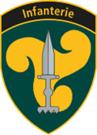
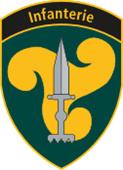

Attestato di formazione e di competenza
L′Esercito svizzero conferma che
{{User.FirstLastName}}
nato il {{User.Birthdate | Date: "dd.MM.yyyy"}}
ha assolto il seguente servizio militare:
| Servizio militare presso: |
{{User.Text1}} |
| Periodo: |
{{DateAcquired | Date: "dd.MM.yyyy"}} - {{ValidUntil | Date: "dd.MM.yyyy"}} |
| Periodo: |
Sanitario d’unità di fanteria / conducente C1 |
| Grad: |
Soldato |
Ringrazio il soldato {{User.FirstLastName}} per il suo impiego nell′Esercito svizzero e gli auguro
ogni successo e soddisfazione nella sua futura carriera.
Brigata d’aviazione 31

Brigadier Peter Soller
Comandante
Questo attestato di formazione e competenza è trasparente e non contiene alcuna informazione nascosta
Durante la scuola reclute, ha acquisito le seguenti competenze teoriche e pratiche:
| Competenze |
Contenuto / Portata |
|
Responsabilità personale
|
Vivendo insieme nella sua unità militare, ha dovuto assumersi la responsabilità per
sé stesso e per gli altri all′interno del gruppo
|
|
Lealtà
|
Durante il periodo di servizio, ha vissuto secondo i valori della comunità, le norme
sociali e le regole specifiche del gruppo.
|
|
Resilienza
|
Durante la scuola reclute, ha vissuto fasi di maggiore stress fisico e psicologico.
Ha resistito a queste condizioni difficili ed è stato in grado di concentrarsi sull′essenziale.
|
|
Capacità di apprendimento e adattamento (flessibilità)
|
Grazie alla sua capacità di apprendimento e adattamento, è stato in grado di ambientarsi
in un ambiente non familiare.
|
|
Capacità di gestire le critiche e i conflitti
|
In condizioni di maggiore stress fisico e/o psicologico, è stata richiesta la capacità
di gestire le critiche e i conflitti.
|
|
Lavoro di squadra
|
La condivisione di compiti, obbiettivi ed esperienze ha rafforzato il rispetto e
l′apprezzamento reciproco.
|
|
Competenze sociali
|
Persone di diverse origini, lingue, culture, generi, religioni e status sociale l′hanno
accompagnato durante il suo servizio e l′hanno stimolato a consolidare la sua competenza sociale.
|
|
Competenze tecniche
|
|
Nell′istruzione specialistica ha assolto i seguenti moduli:
- Istruzione militare di base generale
- Corso speciale per sanitari d’unità (anatomia / fisiologia e fisiopatologia del corpo umano)
- Condurre veicoli fino a 7,5 t con e senza rimorchio anche in condizioni difficili su strada e nel terreno
- É in grado di assicurare il carico e dispone di un’istruzione minima nel trasporto di merci pericolose
Il suo ambito di competenza comprendeva le seguenti attività:
- Recuperare pazienti adottando le necessarie misure d’urgenza
- Garantire le attività negli ambiti sorveglianza, trattamento e trasporto di pazienti (TACEVAC)
- Applicare le misure avanzate per salvare la vita
- Attività medico-tecniche (infusioni, iniezioni)
- Trattamento con medicamenti secondo prescrizione medica
- Amministrazione di medicamenti e materiale sanitario
- Manutenzione autonoma dei veicoli nell’ambito delle prescrizioni sul servizio di parco fino all’avvio dei necessari lavori di rimessa in efficienza
Nell'ambito dell'aiuto a sé stesso e al camerata, ha ricevuto l'attestato di soccorritore.
Nell'ambito del corso di specializzazione Unit Paramedic, ha conseguito il certificato NAEMT
certificato Trauma First Responder (TFR).
Ed è stato addestrato al Tactical Combat Casualty Care (TCCC) di livello 3.
L′Esercito svizzero svolge a scadenze regolari controlli di sicurezza relativi alle persone.
In occasione del reclutamento ha avuto il primo controllo sulla sicurezza, che ha superato.
|